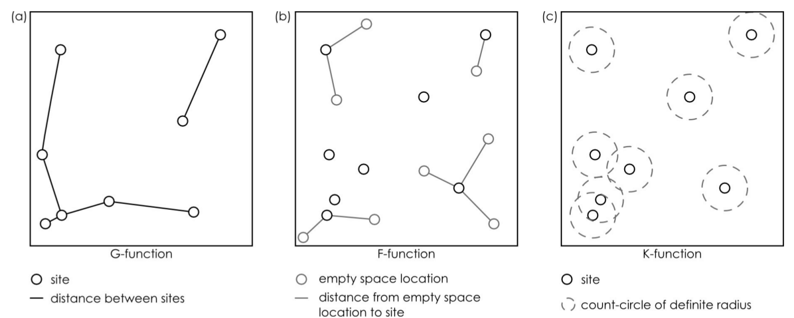
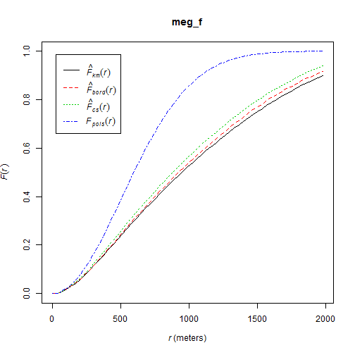
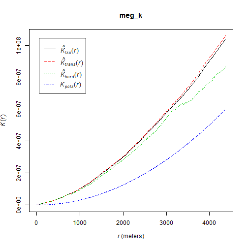
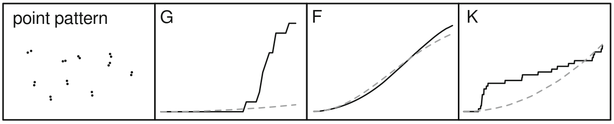
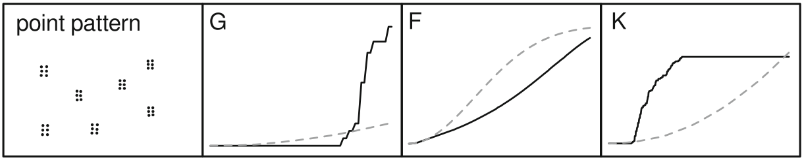
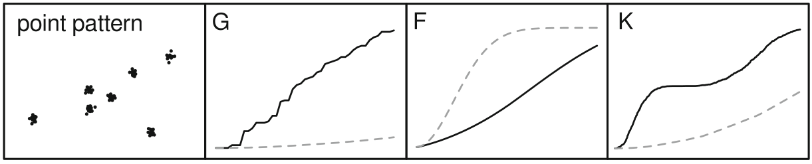
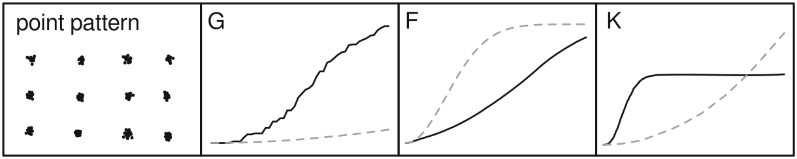

Point Patterns and Network Approaches
Modelling Spheres of Interaction
Oliver Nakoinz, Daniel Knitter
MOSAIC Summer School 2016
Modelling Spheres of Interaction
Interacting partners
- individual interactions
- interaction in groups
- interaction between groups

Modelling Spheres of Interaction
Interacting systems
- Point Patterns
- Networks
- Systems

Point Patterns

Point pattern analyses
An approach and a set of methods that helps you to be explicit about the processes that caused the spatial distribution of your points (e.g. ceramic finds, settlements, graveyards, ...) [from pattern to process]
- http://spatstat.github.io/
- https://cran.r-project.org/web/packages/spatstat/index.html
- Getting Started with Spatstat
- Spatstat manual (1639 pages)
- THE book - - - - >

Point pattern analyses
It uses the simplest possible form of spatial data: points/events in an area/region/space

Point pattern analyses
Random point pattern
independent from space ...
- noise
- individuality
- non-spatial process
Structured point patterns
are influenced by:
- space (first-order effects/properties)
- points (second-order effects/properties)
- structures (third-order effects/properties)
Point pattern analyses

Point pattern analyses
Some terminology: in case we have an random point pattern, Complete Spatial Randomness or an Independent Random Process prevails. The condition are:
- equal probability: any event has an equal probability of being in any position
- independence: the positioning of any event is independent of the positioning of any other event
Point pattern analyses
Some terminology: in case we have an random point pattern, Complete Spatial Randomness or an Independent Random Process prevails. The condition are:
- equal probability: any event has an equal probability of being in any position
- independence: the positioning of any event is independent of the positioning of any other event
CSR means that the process is random not the resulting point pattern!
In point pattern analyses we test against CSR and different forms of specific processes to learn more about our pattern.
Point pattern analyses

Point pattern analyses
A structured point pattern violates CSR conditions:
First-order effects influence the probability of events being in any position of the region --> to trace such influences we investigate the intensity function (~ density) of the points
In case second-order effects are present, points are not independent from one another --> to trace such influences we investigate the distance distributions of the points
Point pattern analyses
- a stationary point process has a constant point density function.
- a homogeneous point process is stationary and isotropic. --> CSR
- a stationary Poisson point process is the reference model in many test for CSR
Point pattern analyses
Events are independent
- a non-stationary (Poisson) point process has an inhomogeneous intensity function --> e.g. caused by a covariate.
Events are not independent
- the Cox process is an inhomogeneous Poisson process with a random intensity function. (Approach: create random pattern, create points using Poisson and covariate of random intensity)
- a Gibbs process involves influence from other points and models an explicit interaction between points (mainly for inhibition). In the case of a hard core Gibbs process, points avoid each other up to a certain threshold and they ignore each other.
- a Strauss process has a constant influence within a certain distance threshold.
- a Neyman–Scott process is used to create clustered point pattern by creating random cluster centres that create "offspring" points
Point pattern analyses
Simple measures: mean, standard deviation, intensity (~ density)

O'Sullivan & Unwin 2010, 126-126
Point pattern analyses
download.file(
url = "https://raw.githubusercontent.com/dakni/mhbil/master/data/meg_dw.csv",
destfile = "2data/meg_dw.csv")
meg_dw <- read.table(file = "2data/meg_dw.csv",
header = TRUE,
sep = ";")
Point pattern analyses
library(spatstat)
meg_pp <- ppp(x = meg_dw$x, y = meg_dw$y,
window = owin(xrange = c(min(meg_dw$x),
max(meg_dw$x)
),
yrange = c(min(meg_dw$y),
max(meg_dw$y)
),
unitname = c("meter", "meters")
)
)
Point pattern analyses
plot(meg_pp)

Point pattern analyses
mc <- cbind(sum(meg_pp$x/meg_pp$n),
sum(meg_pp$y/meg_pp$n)
)
stdist <- sqrt(sum((meg_pp$x-mean(meg_pp$x))^2 +
(meg_pp$y-mean(meg_pp$y))^2) /
meg_pp$n
)
plot(meg_pp)
points(mc)
library(plotrix)
draw.circle(x = mc[1], y = mc[2], radius = stdist, border = "red")
Point pattern analyses

Point pattern analyses
Global intensity = Number of points per area
## A = a * b
area.sqm <- diff(meg_pp$window$xrange) * diff(meg_pp$window$yrange)
area.sqkm <- area.sqm*10^-6
# area <- area/1000000
area.sqkm
## [1] 431.3529
## calculate intensity
intensity <- meg_pp$n/area.sqkm
intensity
## [1] 0.6189827
Point pattern analyses
Local intensity
qc.meg <- quadratcount(X = meg_pp)
plot(qc.meg);
points(meg_pp, pch = 20, cex = .5, col = rgb(.2,.2,.2,.5))
Point pattern analyses
Local intensity
Does the quadratcount indicates CSR?

Point pattern analyses
Local intensity
Does the quadratcount indicates CSR?
To check we use a \(\chi^2\) test approach (remember: relation between observed (i.e. empirical) and expected (i.e. theoretical, here CSR) amounts of points in quadrants)
qt_meg <- quadrat.test(meg_pp)
qt_meg
##
## Chi-squared test of CSR using quadrat counts
## Pearson X2 statistic
##
## data: meg_pp
## X2 = 274.48, df = 24, p-value < 2.2e-16
## alternative hypothesis: two.sided
##
## Quadrats: 5 by 5 grid of tiles
Point pattern analyses
Local intensity
- top left = observed
- top right = expected
- bottom = Pearson residual
Meaning of bottom values:
- +/- 2 = unusual
- larger values = gross departure from fitted model
plot(qt_meg)

Point pattern analyses - First order effects
Kernel density estimation

O'Sullivan & Unwin 2010, Nakoinz & Knitter 2016
Point pattern analyses - First order effects
Kernel density estimation
meg_dens <- density(x = meg_pp,
sigma = 2500)
plot(raster(meg_dens))

Point pattern analyses - First order effects
Kernel density estimation

Knitter & Nakoinz in press
Point pattern analyses - First order effects
Kernel density estimation

Meister et al. forthcoming
Point pattern analyses - First order effects
We assume that the intensity of the point process is a function of the covariate (Z):
\[\lambda(u) = \rho(Z(U))\]
\(\lambda(u)\) can be regarded as location selection function --> it causes an inhomogeneous probability of points to be located in same areas of the study region
Calculation in R is straightforward
cov_meg <- rhohat(object = "YOUR POINT PATTERN",
covariate = "YOUR COVARIATE RASTER",
bw = 100
)
pred_cov_meg <- predict(cov_meg)
cov_compare <- meg_dens - pred_cov_meg
Point pattern analyses - First order effects
Kernel density estimation

Meister et al. forthcoming
Point pattern analyses - First order effects
Kernel density estimation

Meister et al. forthcoming
Point pattern analyses - Second order effects
Point pattern analyses

O'Sullivan & Unwin 2010
Point pattern analyses - Second order effects
\[R = \frac{observed~\overline{d_{min}}}{expected~\overline{d_{min}}}\]
\[R = \frac{\overline{d_{min}}}{\frac{1}{2\sqrt{\lambda}}}\]
meg_nn <- nndist(meg_pp)
mean(meg_nn)
## [1] 358.8447
nnE <- 1/(2*sqrt((meg_pp$n/area.sqm)))
nnE
## [1] 635.5222
R.meg <- mean(meg_nn)/nnE
R.meg
## [1] 0.5646453
Point pattern analyses - Second order effects
hist(meg_nn)
abline(v=mean(meg_nn))
abline(v=median(meg_nn), lty=2)

Point pattern analyses - Second order effects

Nakoinz & Knitter 2016, 135
Point pattern analyses - Second order effects

Knitter et al. 2014, 113
Point pattern analyses - Second order effects
cumulative frequency distribution of the nearest-neighbor distances
\[G(d) = \frac{\#(d_{min}(S_{i}) < d)}{n}\]
The function tells us what fraction of all n-n distances is less than d
meg_g <- Gest(meg_pp)
plot(meg_g)

Point pattern analyses - Second order effects
cumulative frequency distribution of the nearest-neighbor distances of arbitrary events to known events
\[F(d) = \frac{\#(d_{min}(p_i,S) < d)}{m}\]
meg_f <- Fest(meg_pp)
plot(meg_f)
hmm...this can be advanced...in the Workshop :)

Point pattern analyses - Second order effects
~ cumulative frequency distribution of all points within a certain radius
\[K(d) = \frac{\sum\limits_{i=1}^{n}\#(S \in C(s_i,d))}{n\lambda}\]
meg_k <- Kest(meg_pp)
plot(meg_k)

Point pattern analyses - Second order effects




Nakoinz & Knitter 2016, 142-143
Networks
Networks
Definition
A networks are objects, in which elements (vertices) are connected by edges.
Networks are models, mapping certain facets of the real world.
Network theory has roots in geography and in social sciences
Networks
Network theory is based on graph theory

Do you know examples of networks?
Networks
- Rivers, Knappett, Evans
- Cyclades in Bronze Age
- fixed radius network

Networks
- Rivers, Knappett, Evans
- distance decay function

Networks
- Rivers, Knappett, Evans
- Cyclades in Bronze Age
- entropy model using double constrains

Networks | Graphs
- package igraph
- constructing graphs
## Error in plot(n1): object 'n1' not found
library("igraph")
n1 <- graph( edges=c(1,5, 2,4, 1,3, 2,5,
3,5, 1,2, 3,4), n=6, directed=T )
plot(n1)
n1
## IGRAPH D--- 6 7 --
## + edges:
## [1] 1->5 2->4 1->3 2->5 3->5 1->2 3->4
E(n1)
## + 7/7 edges:
## [1] 1->5 2->4 1->3 2->5 3->5 1->2 3->4
V(n1)
## + 6/6 vertices:
## [1] 1 2 3 4 5 6
Networks | Graphs
- package igraph
- constructing graphs

get.adjacency(n1)
## 6 x 6 sparse Matrix of class "dgCMatrix"
##
## [1,] . 1 1 . 1 .
## [2,] . . . 1 1 .
## [3,] . . . 1 1 .
## [4,] . . . . . .
## [5,] . . . . . .
## [6,] . . . . . .
Networks | Graphs

n1 <- set_vertex_attr(n1, "label",
value =c("p1", "p2", "p3",
"Ppoint4", "Punkt 5", "6"))
plot(n1)
Networks | Graphs

n2 <- make_full_graph(22)
plot(n2)
Networks | Graphs

n3 <- make_tree(22, children = 3,
mode = "undirected")
plot(n3)
Networks
Delaunay graph
- Delaunay graph as example for graphs/spatial networks
- The Delaunay graph connects the natural neighbours

Networks | Delaunay graph
Construction rules for some neighbourhood graphs

Networks | Delaunay graph
The connections represent the liklyness of interaction

Networks
- packages
spdep - spatial graphs
library("spdep")
wd <- "/home/fon/daten/analyse/mosaic"
setwd(wd)
set.seed(1242)
co.weapons <- read.csv("2data/
shkr-weapons.csv", header=TRUE,
sep=";")[sample(1:220,10),1:2]
Networks | Delaunay graph
##
## PLEASE NOTE: The components "delsgs" and "summary" of the
## object returned by deldir() are now DATA FRAMES rather than
## matrices (as they were prior to release 0.0-18).
## See help("deldir").
##
## PLEASE NOTE: The process that deldir() uses for determining
## duplicated points has changed from that used in version
## 0.0-9 of this package (and previously). See help("deldir").
## Error in CRS(as.character(crs1)): object 'crs1' not found
## Error in plot(del): object 'del' not found
coords <- as.matrix(coordinates
(co.weapons))
ids <- row.names(as.data.frame
(co.weapons))
wts <- co.weapons[,1]; wts[] <- 1
fs_nb_del <- tri2nb(co.weapons,
row.names=ids)
del <- nb2lines(fs_nb_del,
wts=wts, coords=coords,
proj4string = CRS(as.character(crs1)))
plot(del)
Networks | SOI
## Error in CRS(as.character(crs1)): object 'crs1' not found
## Error in plot(soi): object 'soi' not found
library(RANN)
fs_nb_soi <- graph2nb(soi.graph(fs_nb_del,
coords), row.names=ids)
soi <- nb2lines(fs_nb_soi, wts=wts,
coords=coords, proj4string =
CRS(as.character(crs1)))
plot(soi)
Networks | Gabriel-Graph
## Error in CRS(as.character(crs1)): object 'crs1' not found
## Error in plot(gabriel): object 'gabriel' not found
fs_nb_gabriel <- graph2nb(gabrielneigh
(coords), row.names=ids)
gabriel <- nb2lines(fs_nb_gabriel,
wts=wts, coords=coords,
proj4string = CRS(as.character(crs1)))
plot(gabriel)
Networks | Relative-Neighbour-Graph
## Error in CRS(as.character(crs1)): object 'crs1' not found
## Error in plot(relative): object 'relative' not found
fs_nb_relative <- graph2nb(
relativeneigh(coords),
row.names=ids)
relative <- nb2lines(fs_nb_relative,
wts=wts, coords=coords,
proj4string = CRS(as.character(crs1)))
plot(relative)
Networks | Delaunay graph
- transforming
spdep-graphtoigraph-graph

n4nb <- nb2mat(fs_nb_del,
style="B", zero.policy=TRUE)
n4 <- graph.adjacency(n4nb,
mode="undirected")
plot(n4)
What do spatial graphs tell about interaction?
Networks | Centrality
Centrality maps the structural importance of a node/edge in a network.

Networks | Centrality
degree(n4)
## [1] 5 3 6 5 5 3 6 3 5 3
closeness(n4)
## [1] 0.07142857 0.06666667 0.08333333 0.07692308 0.07692308 0.05882353
## [7] 0.08333333 0.06250000 0.07692308 0.06666667
betweenness(n4)
## [1] 3.0000000 0.6666667 5.1666667 2.5000000 3.9166667 0.0000000 5.1666667
## [8] 0.0000000 3.9166667 0.6666667
edge_betweenness(n4)
## [1] 3.666667 2.833333 2.833333 2.000000 3.666667 4.166667 2.500000
## [8] 3.750000 2.666667 3.500000 4.083333 2.500000 1.833333 2.833333
## [15] 3.750000 1.833333 3.083333 4.083333 3.666667 3.083333 3.500000
## [22] 4.166667
Networks | Plotting Centrality
- transforming
spdep-graphtoigraph-graph

ceb <- cluster_edge_
betweenness(n4)
dendPlot(ceb, mode="hclust")
Networks | Plotting Centrality
- transforming
spdep-graphtoigraph-graph

plot(ceb, n4)
What does centrality tell about interaction?
Systems
Systems | Agent Based Modelling
ABM comprises
- an actors
- an envirionment and
- a process

Systems | Agent Based Modelling
Example Heuneburg
- indigenous people
- merchants

Systems | Agent Based Modelling
Reasoning for certain relationships

Systems | Agent Based Modelling
The process
Actors can:
- move
- trade
- accumulate wealth

Systems | Agent Based Modelling
Some results

Systems | Agent Based Modelling
But is it useful?
What do you think?

Systems | Agent Based Modelling
Introducing some complexity

Systems | Agent Based Modelling
Some more results

Systems | Agent Based Modelling
Interpretation for the Heuneburg
No code provided for the AMB (Summer School 2017)
Apply point pattern analysis and network analysis in the workshop this afternoon!